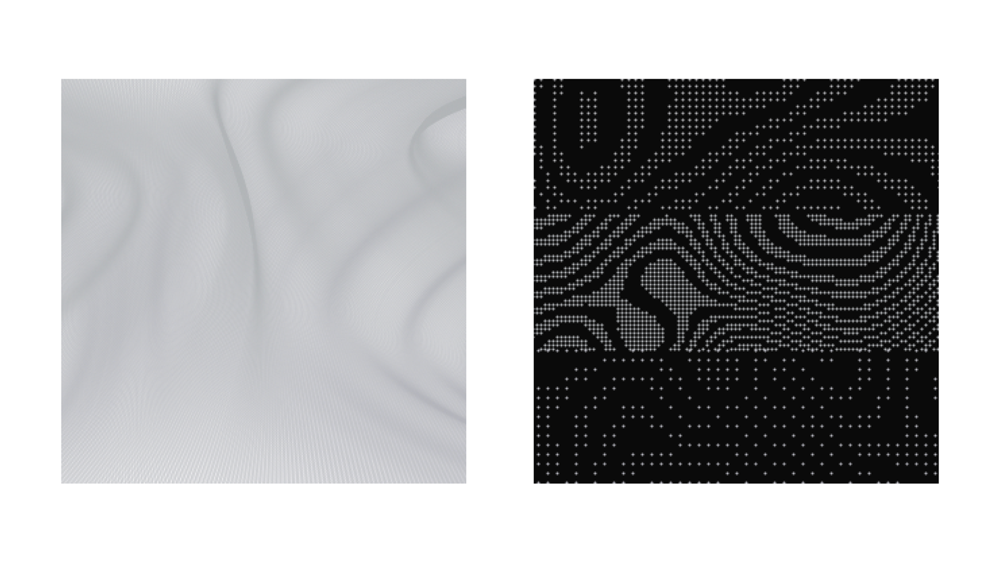
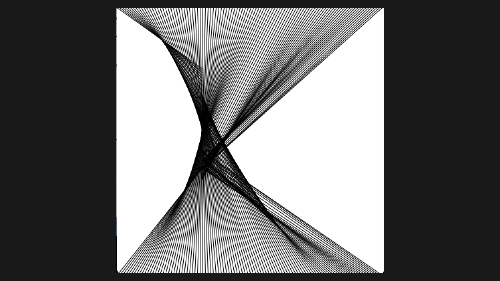
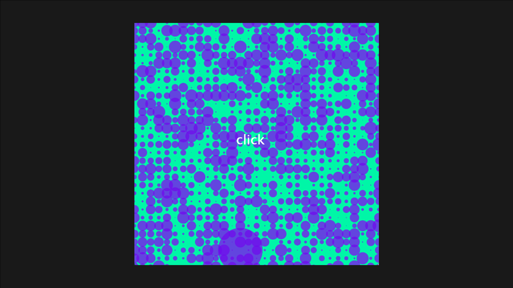
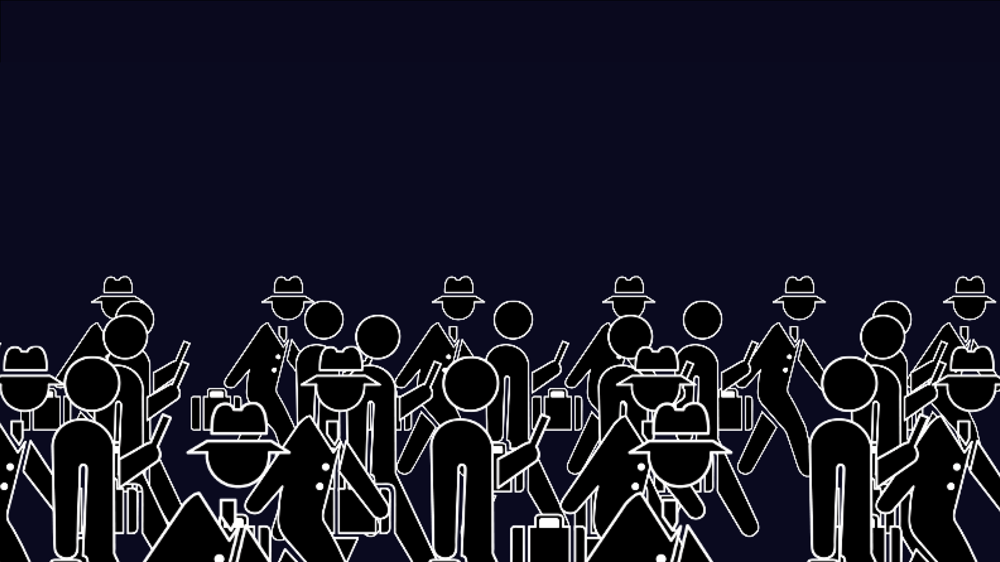
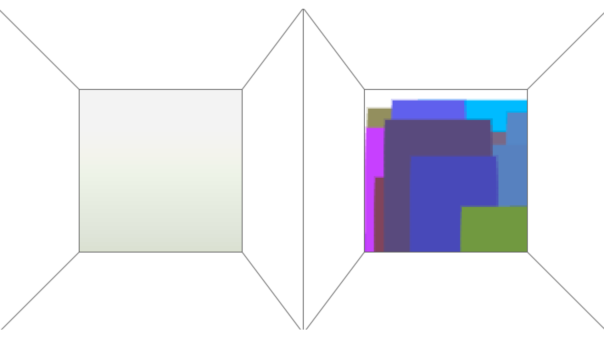
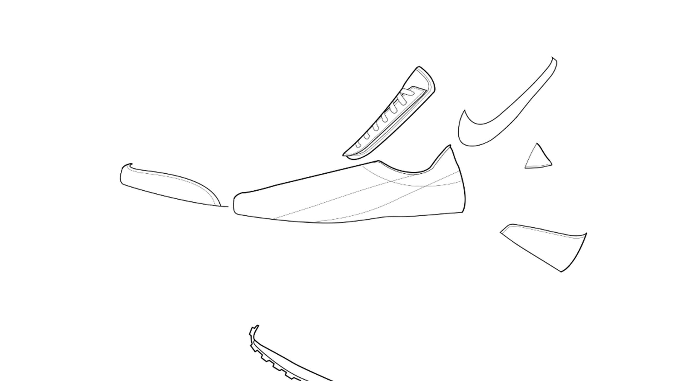
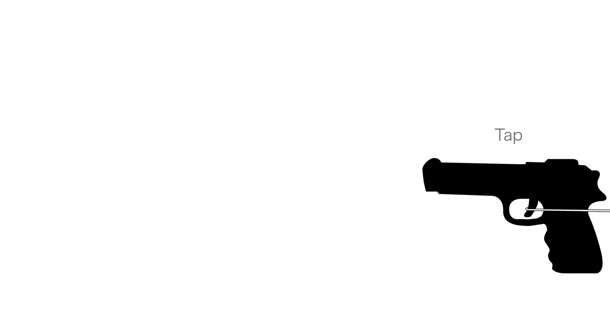
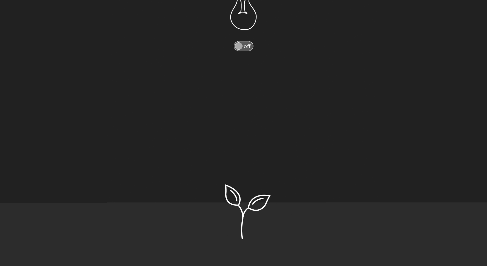

YouTube
Instagram
Top.
About me.
Movie & Animation.
Hobby & Others.
Interaction.
動画を再生できる環境ではありません。
PAGE LINK
Processing
Adobe XD
Touch Designer
Processing

1. 閑静と喧噪
「閑静と喧噪の相反するインタラクション可能なアニメーション」
制作期間は1週間
学校課題
使用ツール：Processing
ファイルをダウンロード

2. カーテン
「ノイズを使用したインタラション可能な静止画」
制作期間は1週間
学校課題
使用ツール：Processing
ファイルをダウンロード

3. 配列
「配列を使用したインタラクション可能なアニメーション」
制作期間は1週間
学校課題
使用ツール：Processing
ファイルをダウンロード

4. Google Doodle
「インタラクション可能なGoogle Doodle」
制作期間は3週間
学校課題
使用ツール：Processing、Illstrator
ファイルをダウンロード

5. 下降と上昇
「下降と上昇の相反するインタラクション可能なアニメーション」
制作期間は1週間
学校課題
使用ツール：Processing
ファイルをダウンロード
Adobe XD
6. 2021 - CLASS
「学校をテーマにAdobeXD とデバイスを利用したインタラクション」
制作期間は3週間
学校課題
使用ツール：AdobeXD、Illstrator
動画再生時間 3:13
Link Here
7. 製造番号 CZ6699 460
「AdobeXDとデバイスを利用したインタラクション」
制作期間は3週間
学校課題
使用ツール：AdobeXD、Illstrator
動画再生時間 1:30
Link Here

8. 製造番号 CZ6699 460
Prototype
「AdobeXDとデバイスを利用したインタラクション/プロトタイプ」
制作期間は1週間
学校課題
使用ツール：AdobeXD、Illstrator
Link Here

9. 旅する弾丸
「AdobeXDと写真を利用したインタラクション」
制作期間は1週間
学校課題
使用ツール：AdobeXD、Photoshop
Link Here

10. Factory Production
「AdobeXDを利用したインタラクション」
制作期間は1週間
学校課題
使用ツール：AdobeXD、Illstrator
Link Here
Touch Designer
11. Wave Box
「音に合わせて変化するボックスと波」
制作期間は約2時間
自主制作
使用ツール：Touch Desiner
動画再生時間 2:44
ファイルをダウンロード
12. 3D Sound
「音とインタラクションによって変化するグラフィック」
制作期間は約3時間
自主制作
使用ツール：Touch Desiner
動画再生時間 3:14
ファイルをダウンロード
Page Top